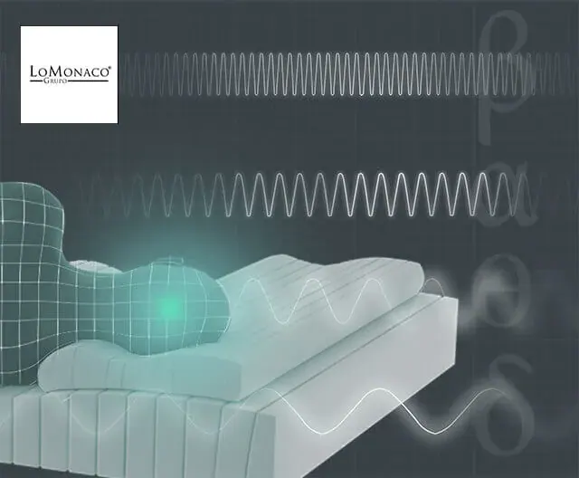

Fases del sueño y ondas cerebrales

Las Fases del Sueño
Concretamente, el cerebro experimenta una actividad única relacionada con el sueño. Las personas así, no duermen porque el cerebro abandone sus cometidos durante la noche, si no que los mecanismos que se ponen en marcha, hacen que se empiece una nueva tarea: dormir.
Para medir la actividad cerebral, se utiliza un aparato llamado encefalograma. Este instrumento está compuesto básicamente, por unos electrodos que se conectan al cuero cabelludo y miden los impulsos de la actividad eléctrica cerebral y esto traduce en un registro gráfico en forma de ondas. Mientras estamos despiertos se pueden evidenciar dos tipos de ondas:
Ondas Cerebrales del Sueño
- Estado beta, que consiste en ondas de sueño irregulares y rápidas, que aparecen cuando la persona está prestando atención a su entorno.
- Estado alfa del Sueño, que es un patrón que resulta de una persona en reposo y relajación.
Cuando sobreviene el sueño, el cerebro comienza a emitir ondas particulares, que en algunos casos no se observan durante la vigilia. Diferenciamos un período de cinco fases en los ciclos del sueño:
Fases del sueño y ondas cerebrales
- Fase 1: Se combinarían las ondas de sueño alfa, con una nueva actividad, las llamadas ondas theta del sueño. Son ondas amplias y de baja frecuencia que indicarían un estado de relajación extremo y somnolencia.
- Fase 2: La persona ya estaría dormida y el trabajo que el cerebro realiza en esta fase, daría lugar al ritmo sigma (también llamado husos de sueño) y los complejos K (onda amplia y negativa seguida de una onda más pequeña y positiva). Sería una fase con un sueño ligero, en la que resulta fácil despertar.
- Fases 3 y 4: Son las fases de sueño profundo llamado sueño de ondas lentas (ondas deltas). Permite que el cerebro descanse y se recupere del ajetreo de todo el día. Este período tiene una función esencialmente reparadora y dura unos 30 minutos.
Aproximadamente a los 90 minutos de abandonarnos en brazos de Morfeo, el electroencefalograma eeg comienza a desincronizarse: aparece la actividad onírica que propicia la Fase REM. Entonces ocurren las mismas ondas cerebrales que cuando estamos alerta, las ondas de sueño beta. En los primeros estudios sobre el sueño, este hecho sorprendía tanto a los investigadores, que también ha sido llamada Fase del “sueño paradójico”, de hecho la onda que registra el encefalograma y la onda de los movimientos oculares son las mismas que cuando una persona despierta ve alguna imagen.
A lo largo de la noche se van sucediendo los períodos de ondas lentas con los de sueño paradójico, así en una noche durmiendo ocho horas, podemos experimentar 4 ó 5 períodos de REM.
Desde Grupo Lo Monaco, esperamos que duermas largas horas en tu colchón Nuevo Triple Lo Monaco ¡Dulces sueños!